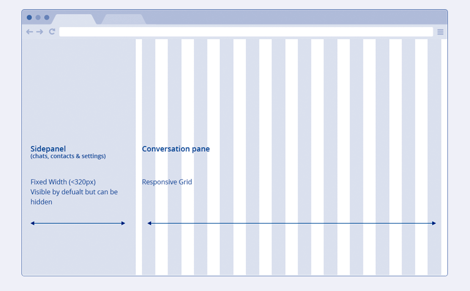
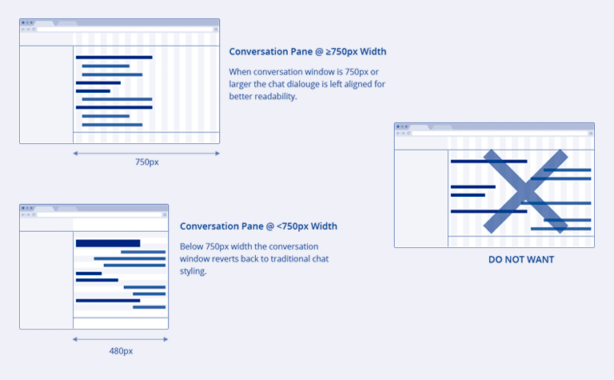
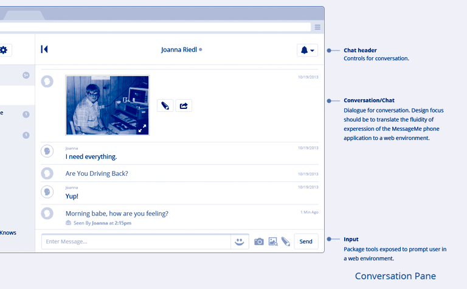
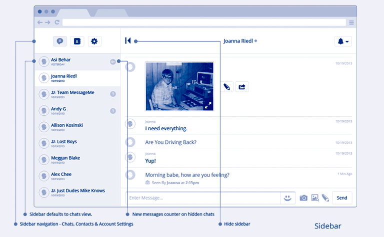
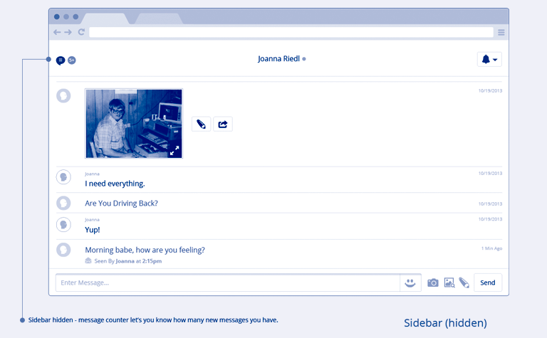
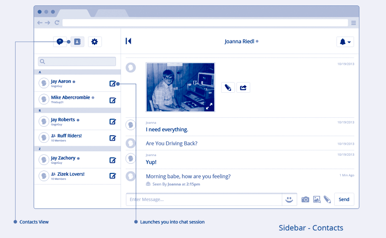
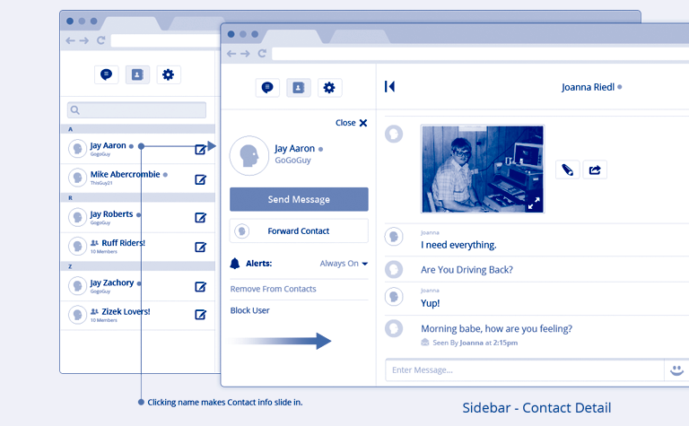
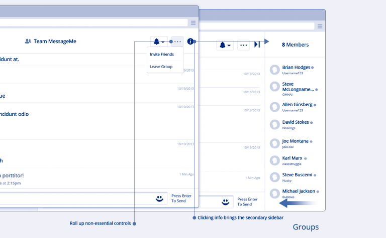

MessageMe brought me on to help rethink their chat web client interface. The goal was to evaluate the environmental factors that a desktop client would need to address, such as multitasking and large screen readability of group and one-to-one chats and have a design that was flexible enough to scale down and fit comfortably into a mobile web interface.
Web Client Layout
Responsive Chat Dialogue
Chat Dialogue
Side Panel - Active Chats
Side Panel Hidden
Contacts
Contact Detail
Group Chat Info